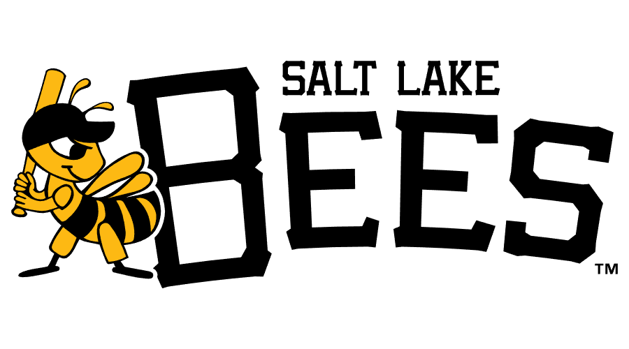
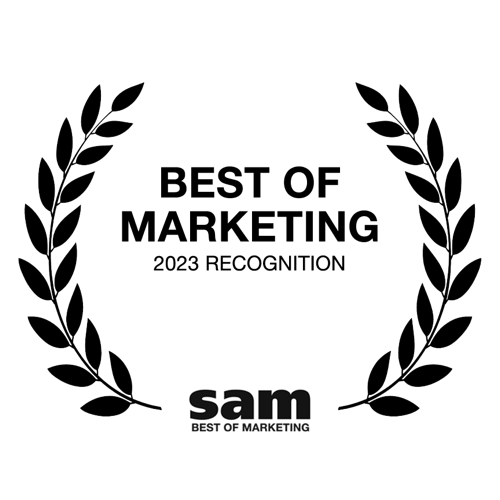
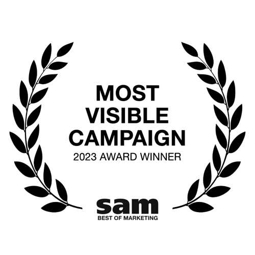
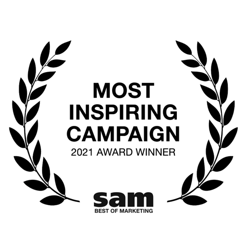
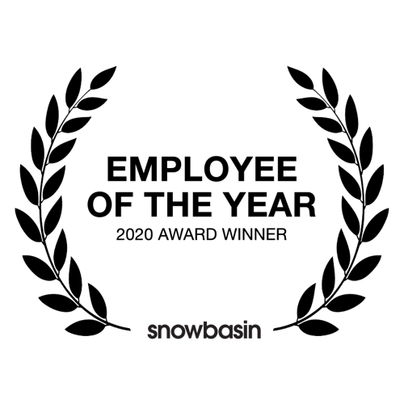
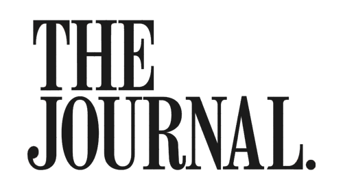
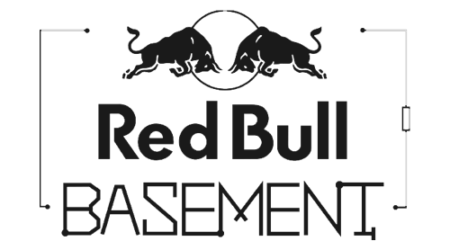
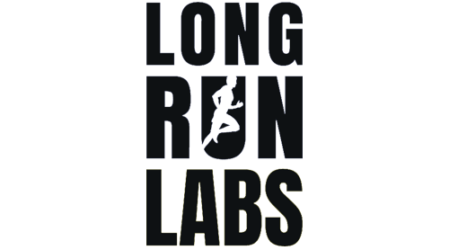

Head of
Growth Marketing Grand America Hotels & Resorts
Growth Marketing Grand America Hotels & Resorts
Founder
Centium AI
Adjunct Professor
David Eccles School of Business
2013 → PRESENT · COLLEGE SPORTS · RESORT · HOSPITALITY · AI

THE PATH.
Twelve years in one market — college athletics, a destination resort, luxury hospitality, and now AI — selling the same thing every time: a reason to show up.

2014
University of Utah
President of The MUSS
Marketing & Fan Experience Intern
Marketing & Fan Experience Intern

2013
Salt Lake Bees
Game Operations Intern
2013 – 2019
Utah Athletics
12 teams · 6 years
2019 – 2024
Snowbasin Resort
Head of Marketing
2024 – PRESENT
Grand America
Head of Growth Marketing
2025 – PRESENT
Centium
Founder
ONE MARKET · EVERY SEAT OF THE SPORTS BUSINESS
SALT LAKE CITY, UTAH
— WHERE IT BEGAN
SPORTS MARKETING
CAREER BEGINS.
Led marketing for 12 teams in six years — the full portfolio, from a sold-out football stadium to a record-setting gymnastics arena.
Utah Football
57straight sellouts
102%stadium capacity
Top-3 NCAA
Top-3 NCAA
$80Mstadium expansion
Utah Gymnastics
- NCAA record attendance for women's sports
- Jon M. Huntsman Center attendance record
12 TEAMS · SIX YEARS
RICE-ECCLES STADIUM · JON M. HUNTSMAN CENTER
Awards & Recognition




— CENTIUM · 2025 – PRESENT
MY AI
FOUNDER
JOURNEY.
Built from the operator's side of the desk: a marketer who kept hitting the same wall, then went and built the thing that moved it.
Featured by



FOUNDER · CENTIUM AI
Subscriber Brands · Outdoor & Endurance

shimano
head
trainingpeaks
gregory
jetboil
— THE WORK
GO
NORTH.
One line on a billboard, and a whole resort pointed at it — the campaign behind the growth on the last slide.
Film loads from Google Drive
— needs a live connection —
— needs a live connection —
SNOWBASIN RESORT · 2019 – 2024
THANK YOU.
ABOUT ME
01 / 07
F FULLSCREEN ←→ NAVIGATE N INDEX HOME RESET